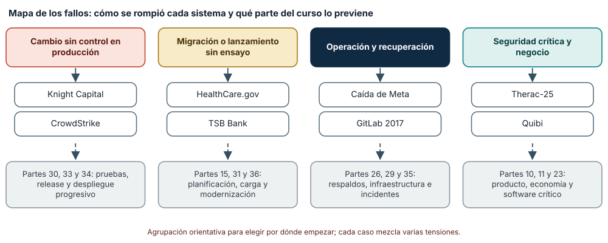

Qué es
Esta página reúne dieciséis fallos de plataformas y sistemas: Knight Capital, HealthCare.gov, TSB Bank, Caída global de Meta, CrowdStrike, Therac-25, Incidente de base de datos de GitLab, Quibi, Ariane 5, vuelo 501, Boeing 737 MAX y MCAS, Post Office Horizon, Equifax 2017, SolarWinds 2020, Cloudflare 2019, Interrupción de Amazon S3 en 2017 y Southwest Airlines 2022. Cada uno tiene su propio caso, con lo que falló en cada instancia, la causa raíz, los factores que contribuyeron y las mejoras que debieron hacerse.
Por qué se construyó
Los fallos son la evidencia más barata de por qué existen las prácticas del curso: pruebas, despliegue progresivo, respaldos verificados, observabilidad, gestión de incidentes y ética profesional. Se construyó para que cada práctica tenga un daño concreto detrás y para entrenar el análisis sin culpables: separar hechos, interpretación y lecciones.
Cómo usar esta página pedagógicamente
- Léelos después de la teoría del curso; el objetivo es reconocer los mecanismos, no juzgar a las personas.
- Antes de leer la causa raíz, escribe tu hipótesis sobre qué falló y qué señal habría avisado.
- Distingue en cada caso el detonante (lo que ocurrió ese día) de las condiciones latentes (lo que hizo posible el daño).
- Termina con «Mejoras que debieron hacerse» y comprueba cuáles ya existen en tu propio sistema.
Cómo se lee un caso
Todos los casos siguen el mismo esquema (definido en la guía de casos) para poder compararlos: ficha histórica, contexto y problema, mercado y usuarios, funcionalidad de principio a fin, negocio y economía, arquitectura y esquemas, casos especiales, línea de tiempo, qué falló, causa raíz y mejoras, vínculo con el curso, qué no generalizar y fuentes públicas. Las afirmaciones llevan fuente; lo inferido se marca como interpretación.
Mapa visual

Cómo leer el mapa. Cada columna es una tensión de ingeniería; las cajas blancas son los casos que mejor la ilustran y la caja gris inferior nombra las partes del curso con las herramientas para analizarla. La agrupación es orientativa: sirve para elegir por dónde empezar, no para clasificar de forma excluyente.
Índice de casos
- Knight Capital — 2012 · Knight Capital Group (organización). Un despliegue incompleto reactivó código antiguo en producción y una firma de trading perdió cientos de millones de dólares en menos de una hora.
- HealthCare.gov — 2013 · CMS y contratistas federales (organización). Un sitio público de inscripción que se lanzó sin haber sido probado de extremo a extremo con la carga real y dejó a muchos usuarios sin poder inscribirse en las primeras semanas.
- TSB Bank — 2018 · TSB Bank (organización). Una migración de plataforma bancaria hecha de una sola vez dejó a clientes sin acceso y con datos de otras personas durante semanas.
- Caída global de Meta — 2021 · Meta, entonces Facebook, Inc. (organización). Un cambio de configuración de red desconectó los servicios de la empresa de Internet y, además, dejó sin herramientas a quienes debían repararlos.
- CrowdStrike — 2024 · CrowdStrike (organización). Una actualización de contenido de un agente de seguridad dejó inservibles millones de equipos Windows a la vez, en aeropuertos, hospitales y bancos.
- Therac-25 — 1985 · Atomic Energy of Canada Limited (organización). Una máquina de radioterapia cuyo software sustituyó a los enclavamientos de hardware causó sobredosis de radiación mortales entre 1985 y 1987.
- Incidente de base de datos de GitLab — 2017 · GitLab Inc. (organización). Un comando ejecutado en el servidor equivocado borró datos de producción y los respaldos que debían salvarlos resultaron no servir.
- Quibi — 2018 · Jeffrey Katzenberg y Meg Whitman. Una plataforma de vídeo corto para móvil que recaudó más de mil millones de dólares y cerró en 2020, meses después de lanzarse, porque resolvía un problema que casi nadie tenía.
- Ariane 5, vuelo 501 — 1996 · ESA y CNES (organizaciones). En el primer vuelo del cohete europeo, software de Ariane 4 reutilizado sin revisar sus supuestos detuvo las dos unidades de guiado idénticas y el lanzador se destruyó a los 39 segundos.
- Boeing 737 MAX y MCAS — 2018 · Boeing y la FAA (organizaciones). Una función nueva del control de vuelo que dependía de un solo sensor empujó el morro de dos aviones hacia abajo, y los análisis de seguridad suponían que los pilotos la reconocerían y la cortarían.
- Post Office Horizon — 2000 · Post Office Ltd y Fujitsu (organizaciones). Un sistema contable con errores conocidos, sin función de disputa y usado como prueba contra los gestores de sucursales llevó a cientos de acusaciones injustas que los tribunales acabaron anulando.
- Equifax 2017 — 2017 · Equifax (organización). Una vulnerabilidad conocida con parche disponible se quedó sin aplicar en un portal de disputas y expuso los datos personales de unos 148 millones de personas.
- SolarWinds 2020 — 2020 · SolarWinds (organización). Un atacante insertó código en las compilaciones de una herramienta de monitoreo y las actualizaciones firmadas llegaron a agencias federales y empresas.
- Cloudflare 2019 — 2019 · Cloudflare (organización). Una expresión regular de una regla del cortafuegos, desplegada a todo el mundo en segundos, agotó la CPU de la red y dejó sin servicio los dominios de Cloudflare durante 27 minutos.
- Interrupción de Amazon S3 en 2017 — 2017 · Amazon Web Services (organización). Un comando con una entrada mal escrita retiró demasiada capacidad de los subsistemas de índice y ubicación de S3 y la región US-EAST-1 dejó de servir peticiones durante unas cuatro horas.
- Southwest Airlines 2022 — 2022 · Southwest Airlines (organización). Una tormenta invernal dejó a Southwest sin capacidad de reasignar tripulaciones: unos 16 900 vuelos cancelados y más de dos millones de pasajeros afectados.
Límites
Los informes públicos son incompletos y a veces contradictorios. Los casos citan investigaciones y post-mortems, declaran lo que no se sabe y no atribuyen intención donde la evidencia solo muestra error.